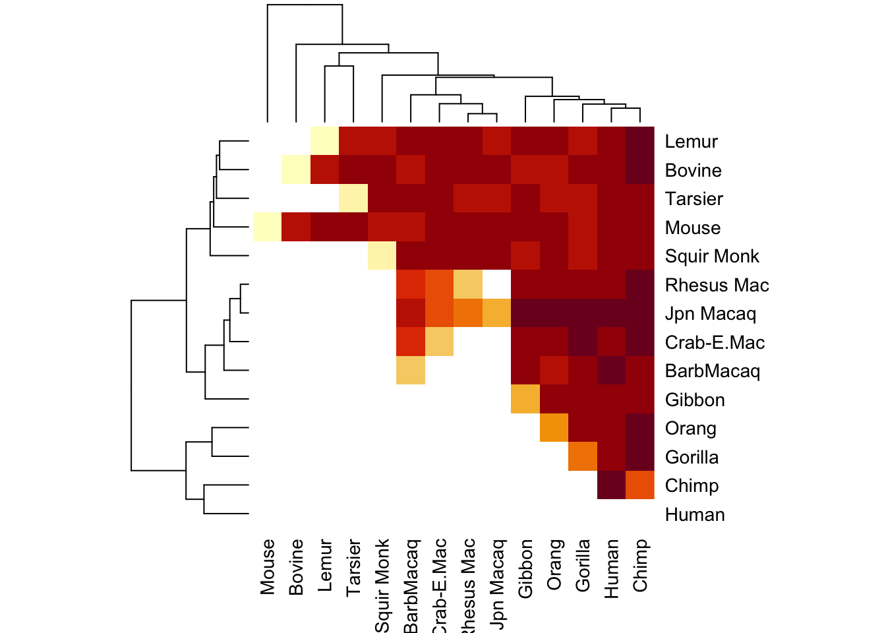
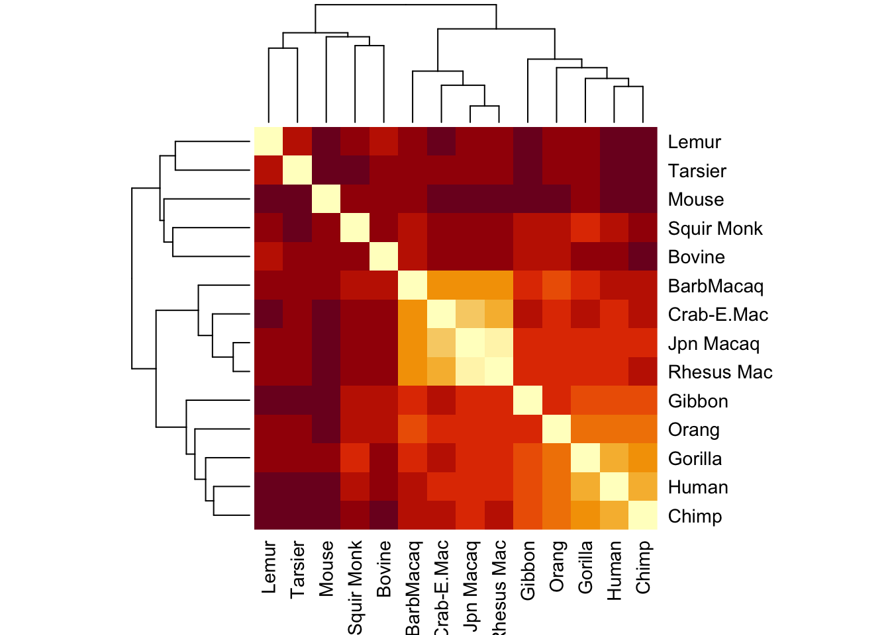
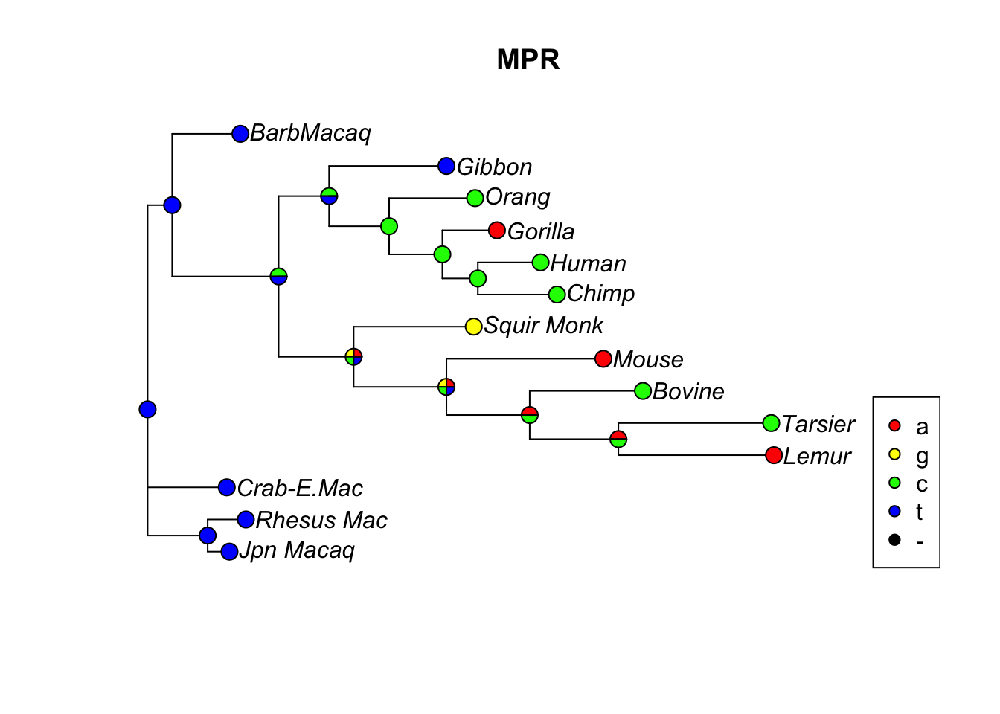
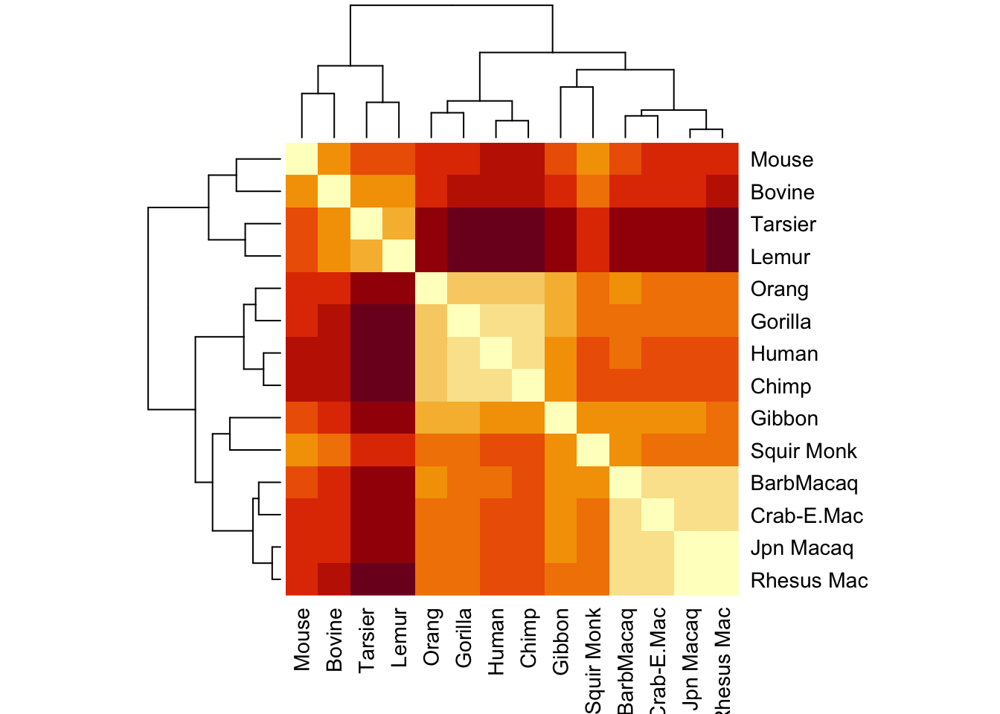
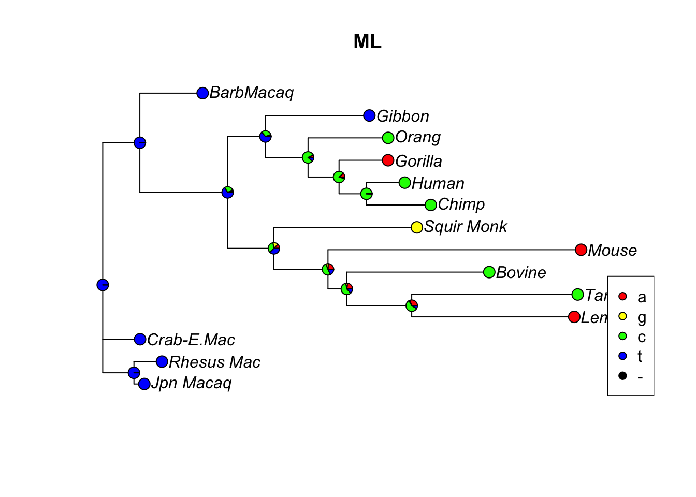
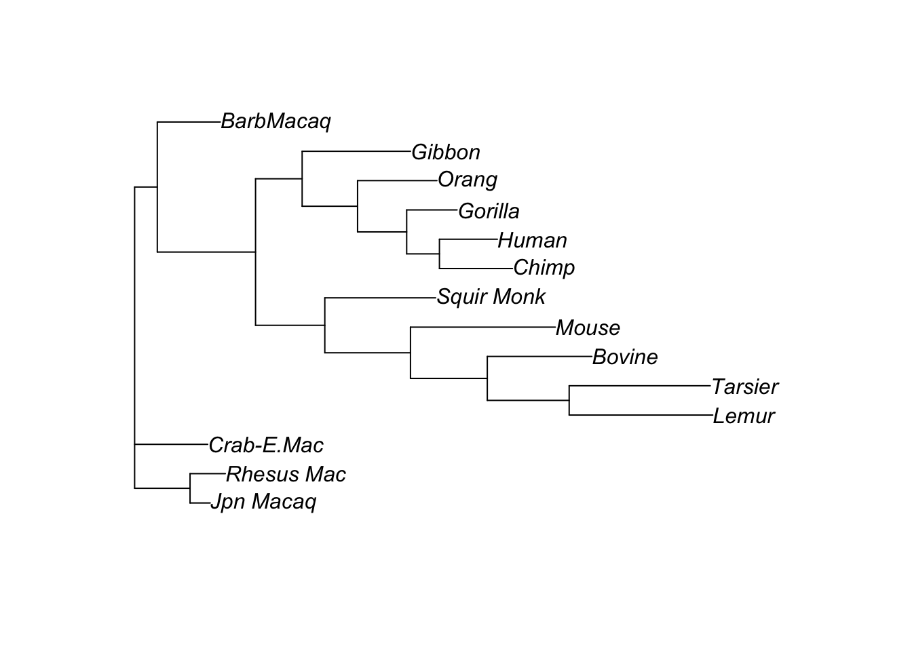
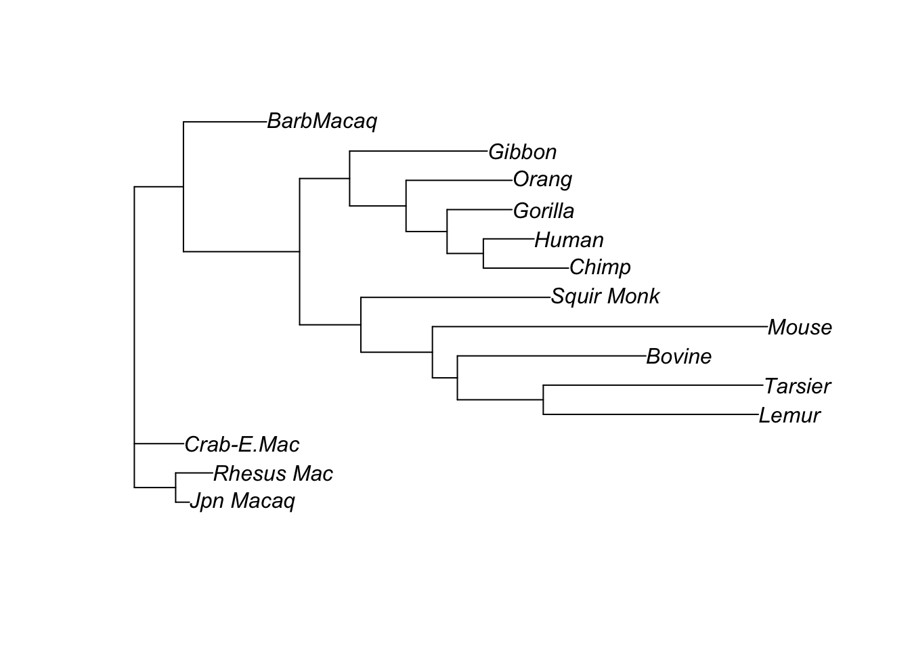
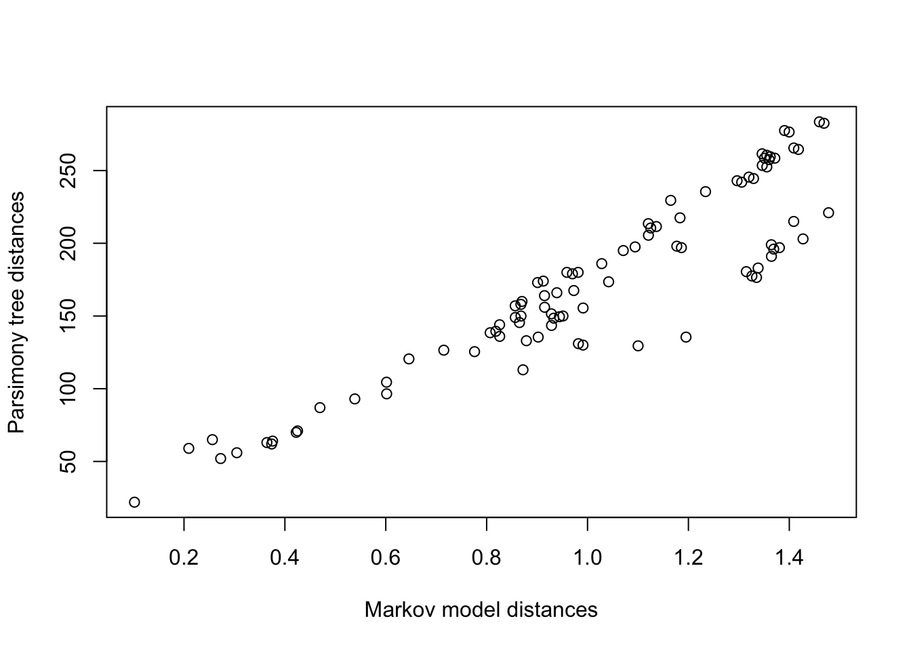

It’s a sequence of the numbers 1–4. Typing primates into the console indicates that the states are a,c,g,t:
primates
14 sequences with 232 character and 217 different site patterns.
The states are a c g t
So the Mouse sequence is really
c('a','c','t','g')[primates$Mouse]
[1] "a" "c" "c" "a" "a" "a" "a" "a" "a" "a" "c" "a" "g" "c" "c" "a" "a" "a"
[19] "c" "a" "c" "a" "a" "c" "c" "c" "c" "a" "t" "c" "c" "c" "g" "g" "c" "t"
[37] "c" "a" "a" "g" "t" "c" "c" "a" "g" "c" "a" "t" "a" "a" "g" "a" "g" "g"
[55] "a" "g" "a" "c" "g" "a" "c" "g" "a" "a" "a" "a" "a" "c" "g" "c" "a" "a"
[73] "a" "g" "g" "a" "a" "c" "g" "c" "g" "g" "g" "a" "a" "g" "c" "g" "g" "g"
[91] "a" "g" "a" "c" "a" "a" "c" "a" "g" "g" "c" "c" "a" "c" "c" "a" "a" "c"
[109] "c" "g" "a" "g" "c" "c" "a" "c" "a" "c" "a" "a" "a" "a" "a" "c" "g" "c"
[127] "a" "g" "a" "g" "g" "g" "a" "g" "c" "g" "a" "a" "a" "g" "a" "c" "t" "a"
[145] "a" "c" "g" "g" "c" "a" "c" "a" "c" "a" "a" "c" "c" "g" "g" "a" "c" "a"
[163] "c" "a" "g" "a" "a" "a" "c" "a" "g" "c" "c" "c" "c" "a" "t" "c" "c" "a"
[181] "a" "c" "a" "c" "c" "c" "g" "g" "c" "c" "a" "c" "a" "a" "a" "g" "c" "g"
[199] "g" "g" "a" "g" "a" "c" "t" "c" "c" "c" "a" "g" "a" "a" "a" "g" "a" "a"
[217] "c"
Let’s turn this into an R data frame to visualize the sequence alignment:
primdat <-as.data.frame(primates)
Let’s look at the the beginning of the multiple sequence alignment:
head(primdat)
Mouse Bovine Lemur Tarsier Squir Monk Jpn Macaq Rhesus Mac Crab-E.Mac
1 a a a a a a a a
2 c c c t c c c c
3 c c c c c t t c
4 a a a t c c t c
5 a a a a c c c c
6 a a a c a a a a
BarbMacaq Gibbon Orang Gorilla Chimp Human
1 a a a a a a
2 c c c c c c
3 c t c c c c
4 c a c c c c
5 t t c c c c
6 a a a a a a
The sequences appear to be mostly similar. Let’s look at each pair in the data and find the number of differences in the sequences.
For example, if we wanted to see how many sites differ between Mouse and Human, we could do this:
sum(primdat$Mouse != primdat$Human)
[1] 128
128 sites differ; there are
dim(primdat)[1]
[1] 232
total sites.
I will load these into a matrix, where the i,j entry tells me how many sites differ between species i and species j. #This matrix will obviously be symmetric, and the diagonal will be zero.
So, I can just fill in the upper diagonal:
seq_diff_matrix <-matrix(nrow=14,ncol=14)colnames(seq_diff_matrix) <-names(primates)rownames(seq_diff_matrix) <-names(primates)diag(seq_diff_matrix) <-0#I will swallow my pride and write a nested for loop:for(i in1:14){for(j in i:14){ seq_diff_matrix[i,j] <-sum( primdat[,i] != primdat[,j] ) }}seq_diff_matrix
Mouse Bovine Lemur Tarsier Squir Monk Jpn Macaq Rhesus Mac
Mouse 0 121 130 132 125 131 137
Bovine NA 0 113 119 116 118 119
Lemur NA NA 0 113 118 119 124
Tarsier NA NA NA 0 133 121 122
Squir Monk NA NA NA NA 0 118 121
Jpn Macaq NA NA NA NA NA 0 22
Rhesus Mac NA NA NA NA NA NA 0
Crab-E.Mac NA NA NA NA NA NA NA
BarbMacaq NA NA NA NA NA NA NA
Gibbon NA NA NA NA NA NA NA
Orang NA NA NA NA NA NA NA
Gorilla NA NA NA NA NA NA NA
Chimp NA NA NA NA NA NA NA
Human NA NA NA NA NA NA NA
Crab-E.Mac BarbMacaq Gibbon Orang Gorilla Chimp Human
Mouse 136 122 136 133 123 129 128
Bovine 122 115 113 109 119 128 124
Lemur 128 122 130 125 117 139 130
Tarsier 125 125 131 124 124 135 137
Squir Monk 116 115 106 110 102 116 115
Jpn Macaq 42 68 103 95 94 103 94
Rhesus Mac 52 68 94 94 94 109 94
Crab-E.Mac 0 66 105 103 111 115 103
BarbMacaq NA 0 99 91 99 106 109
Gibbon NA NA 0 93 85 90 84
Orang NA NA NA 0 70 78 73
Gorilla NA NA NA NA 0 62 56
Chimp NA NA NA NA NA 0 52
Human NA NA NA NA NA NA 0
So already, it is abundantly clear that Humans, Chimps, and Gorillas are are pretty similar.
Then if we invoke
heatmap(seq_diff_matrix)

This looks a little funny. I’m going to fill in the rest of the matrix to see if this plots a little better
seq_diff_matrix[lower.tri(seq_diff_matrix)] <-t(seq_diff_matrix)[lower.tri(t(seq_diff_matrix))]#check to make sure I did this rightseq_diff_matrix ==t(seq_diff_matrix)
#Yes -- now plot againheatmap(seq_diff_matrix, symm=T)

Now it’s a little more apparent that some groups are more closely related to each other than others.
It even makes a nice little dendogram tree!
We have made a tree, but there are some potential drawbacks with this. Many evolutionary biologists originally held the view that if the tree reflects evolutionary history of these organisms, that the ancestors implied by the internal nodes of the tree should have their own sequences. In constructing a phylogeny, we should really be taking account of the fact that the location of nucleotide differences is important, not just the raw number of differences. Nothing we have done so far made use of the idea that ancestors should have similar sequences to their descendants.
This is why the method of Parsimony was originally developed. Instead of looking at pairwise differences between sequences, we try to determine what the evolutionary history would have been, under the assumption that evolution is “parsimonious” – the number of nucleotide changes from the root of the tree to the leaves should be minimized.
Let’s calculate a tree using this criterion:
tree <-pratchet(primates, trace=0) |>acctran(primates) |>makeNodeLabel()parsimony(tree, primates)
[1] 746
anc.pars <-anc_pars(tree, primates)#Let's look at the evolution of site 17 in the sequences:plotAnc(anc.pars, 17)title("MPR")

We can calculate pairwise distances between the species once again, but this time using the branch lengths in the tree. The distance between two species corresponds to the sum of the branch lengths along the unique path connecting te two species through their most recent common ancestor. Because we are dealing with trees (a special type of graph), there is always a unique path connecting two leaves.
parsmny_dist_mat <-cophenetic(tree)
You can verify that this matrix is symmetric. Let’s visualize this:
par(mfrow=c(1,2))heatmap(parsmny_dist_mat,symm=T)

This is slightly different from the pairwise sequence differene matrix. Let’s compare the pairwise distances in both:
Clearly these things are correlated - but they are not identical.
There are some drawbacks for parsimony as well. The first major drawback is that the criterion to minimize the number of nucleotide changes tends to produce trees with branch lengths that …
This is the motivation for the final tree construction method we will consider here – the so-called Likelihood methods. The likelihood methods all use Markov chains to describe rates of change in nucleotides over time. These models depend on parameters, and can be subsumed into Likelihood-based methods.
Because our focus for this workshop is discrete phylogeography, we will not consider methods making use of continuous data at the tips of trees. It is possible to formulate diffusion models and stochastic processes such as the Ornstein-Uhlenbeck process to model evoultion of continuous traits from root to leaves. These are usually not employed to estimate phylogenetic trees from the outset, but rather to carry out ancestral character estimation for a continuous trait once a phylogeny has been obtained.
Discrete-state Markov models, as well as the Brownian motion models for trait evolution all fall under the category of Likelihood methods for ancestral character estimation, because it is possible to fit these models to data using techniques from statistics that employ likelihood functions.
We will estiamte parameters of a discrete-state Markov chain defined on the state space (A,C,G,T) and changing in continuous time. We will not estimate the tree topology, but this will adjust the branch lengths in thre tree:
fit <-pml(tree, primates)fit <-optim.pml(fit, model="F81", control =pml.control(trace=0))#This will give us also the most likely ancestral states:anc.ml <-anc_pml(fit)#Let's look at site 17 in the sequences:plotAnc(anc.ml, 17)title("ML")

Let’s compare the parsimony and ML trees:
plot(tree)

plot(anc.ml$tree)

Let’s calculate pairwise distances in this tree:
mldists <-cophenetic(anc.ml$tree)c1 <- mldists[upper.tri(mldists)]c2 <- parsmny_dist_mat[upper.tri(parsmny_dist_mat)]plot(c1,c2,xlab='Markov model distances', ylab='Parsimony tree distances')

So the distances between species in the parsimony and Maximum Likelihood tree using the Markov model for nucleotide changes are pretty tightly correlated, but not identical.
Exercises.
1.
Use the nni function on the original parsimony tree to obtain all of the trees that are one nearest-neighbor interchange away from the parsimony tree. Fit Markov models to each tree and calculate the likelihood for each tree under the optimized parameters of the Markov model. Based off of this, do you think it might be possible to estimate the most likely tree, given the Markov model structure and the primate data?
2.
Load in a different set of sequences from the workshop and try to construct a parsimony tree. Use a nucleotide substitution model of your choice (HKY, F81, etc.) to fit a Markov model describing sequence evolution on the parsimony tree. How much do branch lengths change after fitting the Markov model?
3.
Use the read.tree function to load in a tree that you download from someplace. Try plotting it, and if you can find associated metadata (from Nextstrain, for example) try plotting that on the tree as well. It can be handy to combine the plotTree and tiplabels functions from phytools for this purpose.
It is optional, but the ggtree package in R also comes in handy for plotting trees and you might consider installing it.